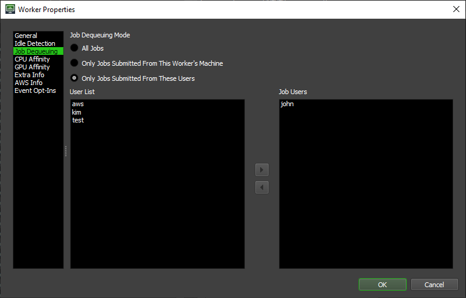
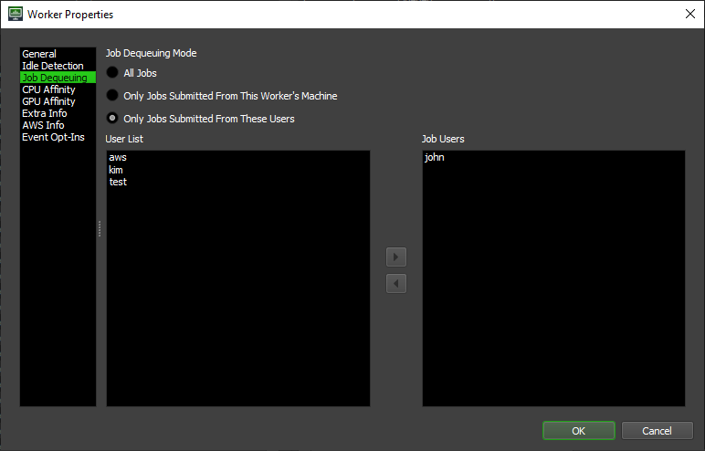

Workers - Command Arguments¶
Note
Check For And Delete Workers¶
SlaveExists¶
Description:
Displays True if the specified Worker exists, False if it does not.
Syntax:
deadlinecommand -SlaveExists <Worker Name> |
Arguments:
Argument |
Description |
|---|---|
<Worker Name> |
The Worker name |
Example:
Assuming that a Worker called RN-001 exists, then
C:\>deadlinecommand -SlaveExists RN-001
True
C:\>deadlinecommand -SlaveExists ICantBelieveThisIsAWorkerName
False
DeleteSlave¶
Description:
Deletes the Worker from the Workers collection in the Database.
Syntax:
deadlinecommand -DeleteSlave <Worker Name(s)> |
Arguments:
Argument |
Description |
|---|---|
<Worker Name(s)> |
The Worker name, or a list of Worker names separated by commas |
Example:
Assuming that a Worker called RN-001 exists, then
C:\>deadlinecommand -DeleteSlave RN-001
Deleted Workers: RN-001
C:\>deadlinecommand -DeleteSlave RN-001,RN-002
Deleted Workers: RN-001,RN-002
Note
Access Worker Settings¶
GetSlaveNames¶
Description:
Displays the names of all Worker registered with the Database’s Workers list.
Aliases: GetSlaveNames, Slaves
Syntax:
deadlinecommand -GetSlaveNames |
deadlinecommand -Slaves |
Arguments:
Argument |
Description |
|---|---|
. |
No arguments |
Example:
C:\>deadlinecommand -GetSlaveNames
RN-001
RN-002
RN-003
RN-004
RN-005
ip-10-128-16-57
ip-10-128-16-183
ip-10-128-16-218
ip-10-128-17-65
ip-10-128-17-82
GetSlave¶
Description:
Display information for the named Worker.
Syntax:
deadlinecommand -GetSlave <Worker Name(s)> [<Use Ini Display>] |
Arguments:
Argument |
Description |
|---|---|
<Worker Name(s)> |
The Worker name, or a list of Worker names separated by commas |
<Use Ini Display> |
true/false (optional, default is false) |
Example:
C:\>deadlinecommand -GetSlave RN-001
AWSInfo=
Comment=
CompletedTasks=0
ConcurrentTasksLimit=0
ConfigName=
CpuAffinity=
CPUs=8
CPUUsage=14
CurrentJobGroup=
CurrentJobId=
CurrentJobName=
CurrentJobPool=
CurrentJobPriority=-1
CurrentJobUser=
CurrentPlugin=
CurrentTaskIds=
CurrentTaskNames=
CurrentTaskProgresses=
CurrentTaskRenderTimes=
CurrentTaskStatus=
Description=
DiskReads=0
DiskSpace=19453329408
DiskSpaceString=18.117 GB
DiskWrites=490029
Enabled=True
EnableIdleCpuThreshold=False
EnableIdleProcessCheck=False
EnableIdleRamMBThreshold=False
EnableIdleRamPercentThreshold=False
EnableIdleUserCheck=False
EventOptInArray=
EventOptIns=
EventOptInsStr={}
ExtraElements=
ExtraInfo0=
ExtraInfo1=
ExtraInfo2=
ExtraInfo3=
ExtraInfo4=
ExtraInfo5=
ExtraInfo6=
ExtraInfo7=
ExtraInfo8=
ExtraInfo9=
ExtraInfoDictionary=
FailedTasks=0
FinishTaskWhenStoppingIfNotIdle=False
FreeMemory=17210576896
FreeMode=False
GpuAffinity=
GroupMappingID=
Groups=
GroupsString=
HostMachineIPAddressOverride=
HostName=RN-001
ID=rn-001
IdleCpuThreshold=50
IdleMinutes=10
IdleProcessNames=
IdleRamMBThreshold=4096
IdleRamPercentThreshold=50
IdleUserNames=
IPAddress=192.168.18.7
IsAWSPortalInstance=False
IsCloudSlave=False
IsLicensedByUsage=True
IsLicensePermanent=False
IsRunningAsService=False
LastReadRepoTime=Jan 01/01 00:00:00
LastReadTime=Jan 01/01 00:00:00
LastWriteTime=Jun 19/20 23:24:40
LicenseDaysLeftToExpiry=4
LicenseLastErrorMessage=
LicenseMode=UsageBased
LicenseServer=(could not detect servers)
LimitGroupStubs=
ListeningPort=62152
MACAddress=00:05:9A:3C:7A:00
MacAddressOverride=
MachineArchitecture=x64
MachineCPUs=8
MachineCPUUsage=14
MachineDiskSpace=19453329408
MachineFreeMemory=17210576896
MachineIPAddress=192.168.18.7
MachineMACAddress=00:01:9A:3D:7C:10
MachineMemory=34234511360
MachineOperatingSystem=Windows 10 Enterprise
MachineProcessorSpeed=2592
MachineRealName=RN-001
MachineUserName=SomeUser
MachineVideoCard=Intel(R) HD Graphics 530
Memory=34234511360
NetworkReceived=1330
NetworkSent=695
NormalizedRenderTimeMultiplier=1
NormalizedTimeoutMultiplier=1
OnLastTaskComplete=Continue Running
OnlyStopSlaveIfStartedByIdleDetection=False
OSShortName=Windows 10 Enterprise
OverrideCpuAffinity=False
OverrideGpuAffinity=False
OverrideListeningPort=False
OverrideSlaveScheduling=False
Pools=
PoolsString=
ProcessorArchitecture=x64
ProcessorSpeed=2592
Region=
RenderingTime=0
SchedulingMode=AllJobs
SlaveComment=
SlaveCompletedTasks=0
SlaveConcurrentTasksLimit=0
SlaveConfigName=
SlaveCpuAffinity=
SlaveCurrentJobGroup=
SlaveCurrentJobId=
SlaveCurrentJobName=
SlaveCurrentJobPool=
SlaveCurrentJobPriority=-1
SlaveCurrentJobUserName=
SlaveCurrentPlugin=
SlaveCurrentTaskIds=
SlaveCurrentTaskNames=
SlaveCurrentTaskProgresses=
SlaveCurrentTaskRenderTimes=
SlaveCurrentTaskStatus=
SlaveDescription=
SlaveEnabled=True
SlaveEnableIdleCpuThreshold=False
SlaveEnableIdleProcessCheck=False
SlaveEnableIdleRamMBThreshold=False
SlaveEnableIdleRamPercentThreshold=False
SlaveEnableIdleUserCheck=False
SlaveExtraInfo0=
SlaveExtraInfo1=
SlaveExtraInfo2=
SlaveExtraInfo3=
SlaveExtraInfo4=
SlaveExtraInfo5=
SlaveExtraInfo6=
SlaveExtraInfo7=
SlaveExtraInfo8=
SlaveExtraInfo9=
SlaveExtraInfoDictionary=
SlaveFailedTasks=0
SlaveFinishTaskWhenStoppingIfNotIdle=False
SlaveFreeMode=False
SlaveGpuAffinity=
SlaveGroups=
SlaveHostMachineIPAddressOverride=
SlaveIdleCpuThreshold=50
SlaveIdleMinutes=10
SlaveIdleProcessNames=
SlaveIdleRamMBThreshold=4096
SlaveIdleRamPercentThreshold=50
SlaveIdleUserNames=
SlaveIsActive=True
SlaveIsLicensedByUsage=True
SlaveIsLicensePermanent=False
SlaveLastLicenseErrorMessage=
SlaveLastMessage=
SlaveLicenseDaysLeftToExpiry=4
SlaveLicenseServer=(could not detect servers)
SlaveLimitGroupStubs=
SlaveListeningPort=5054
SlaveMacAddressOverride=
SlaveMessage=
SlaveName=RN-001
SlaveNormalizedRenderTimeMultiplier=1
SlaveNormalizedTimeoutMultiplier=1
SlaveOnLastTaskComplete=Continue Running
SlaveOnlyStopSlaveIfStartedByIdleDetection=False
SlaveOverrideCpuAffinity=False
SlaveOverrideGpuAffinity=False
SlaveOverrideListeningPort=False
SlaveOverrideSlaveScheduling=False
SlavePools=
SlaveRegion=
SlaveRenderingTime=0
SlaveRunningTime=51
SlaveSchedulingMode=AllJobs
SlaveSettingsGroups=
SlaveSettingsPools=
SlaveStartSlaveIfIdle=False
SlaveState=Idle
SlaveStatus=Idle
SlaveStopSlaveIfNotIdle=False
SlaveUserJobsModeNames=
StartSlaveIfIdle=False
StateDateTime=Jun 19/20 23:24:20
StopSlaveIfNotIdle=False
SwapUsage=535822336
UpdateDateTime=Jun 19/20 23:24:40
UpTimeSeconds=51
UserJobsModeNames=
UserName=SomeUser
UseTmpDataPath=False
Version=v10.1.2.2 Release (d9f8db73b)
VideoCard=Intel(R) HD Graphics 530
WorkerStartTime=Jan 01/01 00:00:00
GetSlaves¶
Description:
Displays information for all the Worker names.
Syntax:
deadlinecommand -GetSlaves [<Use Ini Display>] |
Arguments:
Argument |
Description |
|---|---|
<Use Ini Display> |
true/false (optional, default is false) |
GetSlavesRenderingJob¶
Description:
Display the Workers that are rendering the Job.
Syntax:
deadlinecommand -GetSlavesRenderingJob <Job ID> |
Arguments:
Argument |
Description |
|---|---|
<Job ID> |
The Job ID |
GetMachinesRenderingJob¶
Description:
Display the machine names of the Workers that are rendering the specified Job.
If the second parameter is True, the machine IP addresses will be shown instead.
If the third parameter is True, then duplicate machine names and IP addresses will be shown.
Syntax:
deadlinecommand -GetMachinesRenderingJob <Job ID> [<Get IP Address>] [<Get Duplicates>] |
Arguments:
Argument |
Description |
|---|---|
<Job ID> |
The Job ID |
<Get IP Address> |
true/false (optional, default is false) |
<Get Duplicates> |
true/false (optional, default is false) |
GetSlaveInfo¶
Description:
Gets the info value for the named Worker.
For a list of available info key names, see the Example output of the command GetSlave
Syntax:
deadlinecommand -GetSlaveInfo <Worker Name> <Worker Info Name> |
Arguments:
Argument |
Description |
|---|---|
<Worker Name> |
The Worker name |
<Worker Info Name> |
The name of the info |
Example:
C:\>deadlinecommand -GetSlaveInfo RN-001 DiskSpace
19447320576
GetSlaveSetting¶
Description:
Gets the value of a setting for the Worker.
See also
SetSlaveSetting for a command to set these values.
Syntax:
deadlinecommand -GetSlaveSetting <Worker Name> <Worker Setting> |
Arguments:
Argument |
Description |
|---|---|
<Worker Name> |
The Worker name |
<Worker Setting> |
The Worker setting |
The following Settings can be accessed in the Worker using GetSlaveSetting and SetSlaveSetting.
Note
Setting Name |
Description |
|---|---|
SlaveEnabled |
True if the Worker is enabled, False if the Worker is disabled. |
SlaveGroups |
The Groups that the Worker has been assigned to. Read-only. |
SlavePools |
The Pools that the Worker has been assigned to. Read-only. |
General Settings |
|
SlaveName |
The Worker’s name. |
SlaveDescription |
A description of the Worker. |
SlaveComment |
Brief comment regarding the Worker. |
SlaveNormalizedRenderTimeMultiplier |
Used to calculate the normalized render time of the Worker. The value must be between 0.01 and 100.0 inclusive. |
SlaveNormalizedTimeoutMultiplier |
Used to calculate the normalized timeout for the Worker. The value must be between 0.01 and 100.0 inclusive. |
SlaveConcurrentTasksLimit |
Limits the number of concurrent tasks the Worker can dequeue. The value must be between 0 and 16 inclusive. Set to 0 to use the Worker’s processor count. |
SlaveHostMachineIPAddressOverride |
If non-empty, this host name or IP address will be used for remote communication with the Worker. |
SlaveOverrideListeningPort |
When set to True, the Worker should listen on the port specified by |
SlaveListeningPort |
The port to listen on if |
SlaveHostMachineIPAddressOverride |
If not empty, this host name or IP address will be used for remote communication with the Worker. |
SlaveMacAddressOverride |
If not empty, this is used to override the MAC address for the Worker. |
Idle Detection Settings |
|
SlaveOverrideSlaveScheduling |
True if the Worker settings should override the global Worker Scheduling settings. |
SlaveStartSlaveIfIdle |
When set to True, starts the Worker if the machine has been idle for the number of minutes specified in |
SlaveIdleMinutes |
The number of minutes the Worker must be idle for before starting if |
SlaveEnableIdleCpuThreshold |
When set to True, the Worker will not start when the machine is idle unless the current CPU usage of the machine is lower than the value in |
SlaveIdleCpuThreshold |
If CPU threshold checking is enabled, the Worker will not start when the machine is idle unless the current CPU usage of the machine is lower than this value. |
SlaveEnableIdleRamPercentThreshold |
When set to True, the Worker will not start when the machine is idle unless the current RAM usage of the machine is lower than the value (as a percentage) in |
SlaveIdleRamPercentThreshold |
If RAM Percent threshold checking is enabled, the Worker will not start when the machine is idle unless the current RAM usage of the machine is lower than this value (as a percentage). |
SlaveEnableIdleRamMBThreshold |
When set to True, the Worker will not start when the machine is idle unless the current RAM usage of the machine is lower than the value (in Megabytes) in |
SlaveIdleRamMBThreshold |
If RAM MB threshold checking is enabled, the Worker will not start when the machine is idle unless the current RAM usage of the machine is lower than this value (in Megabytes). |
SlaveEnableIdleProcessCheck |
When set to True, the Worker will not start when the machine is idle if any processes in |
SlaveIdleProcessNames |
The Worker will not start when the machine is idle if any processes in this list are currently running on the machine. Read-only. |
SlaveEnableIdleUserCheck |
When set to True, the Worker will not start when the machine is idle if the launcher is running as one of the users in |
SlaveIdleUserNames |
If user checking is enabled, the Worker will not start when the machine is idle if the launcher is running as this user. Read-only. |
SlaveStopSlaveIfNotIdle |
When set to True, stops the Worker if the machine is no longer idle. |
SlaveOnlyStopSlaveIfStartedByIdleDetection |
When set to True, only stops the Worker if it was started by idle detection. |
SlaveFinishTaskWhenStoppingIfNotIdle |
When set to True, a Worker should finish its current task before shutting down when the machine is no longer idle. |
Job Dequeueing Settings |
|
SlaveSchedulingMode |
Scheduling modes for a Worker, which affects how it dequeues Jobs.
If set to |
SlaveUserJobsModeNames |
If |
CPU Affinity Settings |
|
SlaveOverrideCpuAffinity |
Enable to override the Worker’s CPU affinity (Windows and Linux only). |
SlaveCpuAffinity |
The list of specific CPUs to use if |
GPU Affinity Settings |
|
SlaveOverrideGpuAffinity |
Enable to override the Worker’s GPU affinity. |
SlaveGpuAffinity |
The list of specific GPUs to use if |
Extra Info Settings |
|
SlaveExtraInfo0 |
One of the Worker’s ten Extra Info fields. |
SlaveExtraInfo1 |
One of the Worker’s ten Extra Info fields. |
SlaveExtraInfo2 |
One of the Worker’s ten Extra Info fields. |
SlaveExtraInfo3 |
One of the Worker’s ten Extra Info fields. |
SlaveExtraInfo4 |
One of the Worker’s ten Extra Info fields. |
SlaveExtraInfo5 |
One of the Worker’s ten Extra Info fields. |
SlaveExtraInfo6 |
One of the Worker’s ten Extra Info fields. |
SlaveExtraInfo7 |
One of the Worker’s ten Extra Info fields. |
SlaveExtraInfo8 |
One of the Worker’s ten Extra Info fields. |
SlaveExtraInfo9 |
One of the Worker’s ten Extra Info fields. |
Note
GetSlaveSetting and SetSlaveSetting commands.Example:
C:\>deadlinecommand -Prompt
GetSlaveSetting RN-001 SlaveDescription
Local Render Node 001
GetSlaveSetting RN-001 Description
Local Render Node 001
GetSlaveSetting RN-001 Comment
This machine is rather slow, avoid when rendering heavy Jobs
GetSlaveSetting RN-001 SlaveSchedulingMode
AllJobs
GetSlaveSetting RN-001 ConcurrentTasksLimit
0
GetSlaveSetting RN-001 Enabled
True
GetSlaveSetting RN-001 EnableIdleCpuThreshold
False
GetSlaveSetting RN-001 EnableIdleProcessCheck
False
GetSlaveSetting RN-001 EnableIdleRamMBThreshold
False
GetSlaveSetting RN-001 EnableIdleRamPercentThreshold
False
GetSlaveSetting RN-001 EnableIdleUserCheck
False
Exit
C:\>
SetSlaveSetting¶
Description:
Sets the value of a setting for the Worker.
See also
Syntax:
deadlinecommand -SetSlaveSetting <Worker Name(s)> <Worker Setting> <Value> |
Arguments:
Argument |
Description |
|---|---|
<Worker Name(s)> |
The Worker name, or a list of Worker names separated by commas |
<Worker Setting> |
The Worker setting |
<Value> |
The new value |
Example:
C:\>deadlinecommand -Prompt
SetSlaveSetting RN-002 SlaveDescription "Local Render Node 002"
Set SlaveDescription to Local Render Node 002.
SetSlaveSetting RN-002 Comment "This is a fast machine"
Set Comment to This is a fast machine.
SetSlaveSetting RN-002 SlaveSchedulingMode UserJobs
Set SlaveSchedulingMode to UserJobs.
SetSlaveSetting RN-002 Vogon "Poetry"
Error: setting 'Vogon' not found.
Exit
C:\>
 

GetSlaveExtraInfoKeyValue¶
Description:
Gets the value from the extra info dictionary.
Syntax:
deadlinecommand -GetSlaveExtraInfoKeyValue <Worker Name> <Extra Info Key> |
Arguments:
Argument |
Description |
|---|---|
<Worker Name> |
The name of the Worker |
<Extra Info Key> |
The extra info key to get. |
Example:
C:\>deadlinecommand -SetSlaveExtraInfoKeyValue RN-001 MyCustomValue JurassicParkByFriday
Set the key: MyCustomValue to: JurassicParkByFriday
C:\>deadlinecommand -GetSlaveExtraInfoKeyValue RN-001 MyCustomValue
JurassicParkByFriday
SetSlaveExtraInfoKeyValue¶
Description:
Sets the value of the specified key within the extra info dictionary.
Syntax:
deadlinecommand -SetSlaveExtraInfoKeyValue <Worker Name> <Extra Info Key> <Value> |
Arguments:
Argument |
Description |
|---|---|
<Worker Name> |
The name of the Worker. |
<Extra Info Key> |
The extra info key to get. |
<Value> |
The new value |
Example:
Get Worker Reports¶
GetSlaveReportFilenames¶
Description:
Gets the report filenames for the Worker.
Syntax:
deadlinecommand -GetSlaveReportFilenames <Worker Name> |
Arguments:
Argument |
Description |
|---|---|
<Worker Name> |
The Worker name |
Example:
C:\>deadlinecommand -GetSlaveReportFilenames RN-001
reports\slaves\63\c\5deac5ad68eb13dc3c50c63c.bz2
reports\slaves\b2\c\5deac64ec893e88a981b6b2c.bz2
reports\slaves\b2\f\5deacab3c893e88a981b6b2f.bz2
reports\slaves\b3\5\5dead3cbc893e88a981b6b35.bz2
reports\slaves\c4\3\5e1f5fa34e592472e48bbc43.bz2
reports\slaves\87\e\5e1f5ffd1c0bbe603c3a087e.bz2
reports\slaves\88\4\5e1f96801c0bbe603c3a0884.bz2
reports\slaves\88\6\5e1f978e1c0bbe603c3a0886.bz2
GetSlaveLogReportFilenames¶
Description:
Gets the log report filenames for the Worker.
Syntax:
deadlinecommand -GetSlaveLogReportFilenames <Worker Name> |
Arguments:
Argument |
Description |
|---|---|
<Worker Name> |
The Worker name |
GetSlaveErrorReportFilenames¶
Description:
Gets the error report filenames for the Worker.
Syntax:
deadlinecommand -GetSlaveErrorReportFilenames <Worker Name> |
Arguments:
Argument |
Description |
|---|---|
<Worker Name> |
The Worker name |
Get Worker Limits¶
AddSlavesToJobMachineLimitList¶
Description:
Adds Workers to the Job’s listed Workers.
Syntax:
deadlinecommand -AddSlavesToJobMachineLimitList <Job ID(s)> <Workers> |
Arguments:
Argument |
Description |
|---|---|
<Job ID(s)> |
The Job ID, or a list of Job IDs separated by commas |
<Workers> |
The Workers to add, separated by commas |
RemoveSlavesFromJobMachineLimitList¶
Description:
Removes Workers from the Job’s listed Workers.
Syntax:
deadlinecommand -RemoveSlavesFromJobMachineLimitList <Job ID(s)> <Workers> |
Arguments:
Argument |
Description |
|---|---|
<Job ID(s)> |
The Job ID, or a list of Job IDs separated by commas |
<Workers> |
The Workers to remove, separated by commas |
AddSlavesToLimitGroupList¶
Description:
Adds Workers to the Limit’s listed Workers.
Syntax:
deadlinecommand -AddSlavesToLimitGroupList <Limit Name(s)> <Workers> |
Arguments:
Argument |
Description |
|---|---|
<Limit Name(s)> |
The limit name, or a list of limit names separated by commas |
<Workers> |
The Workers to add, separated by commas |
RemoveSlavesFromLimitGroupList¶
Description:
Removes Workers from the limit’s listed Workers.
Syntax:
deadlinecommand -RemoveSlavesFromLimitGroupList <Limit Name(s)> <Workers> |
Arguments:
Argument |
Description |
|---|---|
<Limit Name(s)> |
The limit name, or a list of limit names separated by commas |
<Workers> |
The Workers to remove, separated by commas |